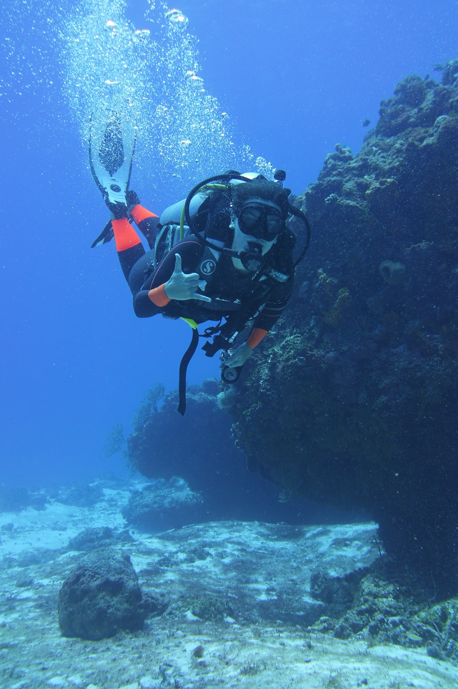
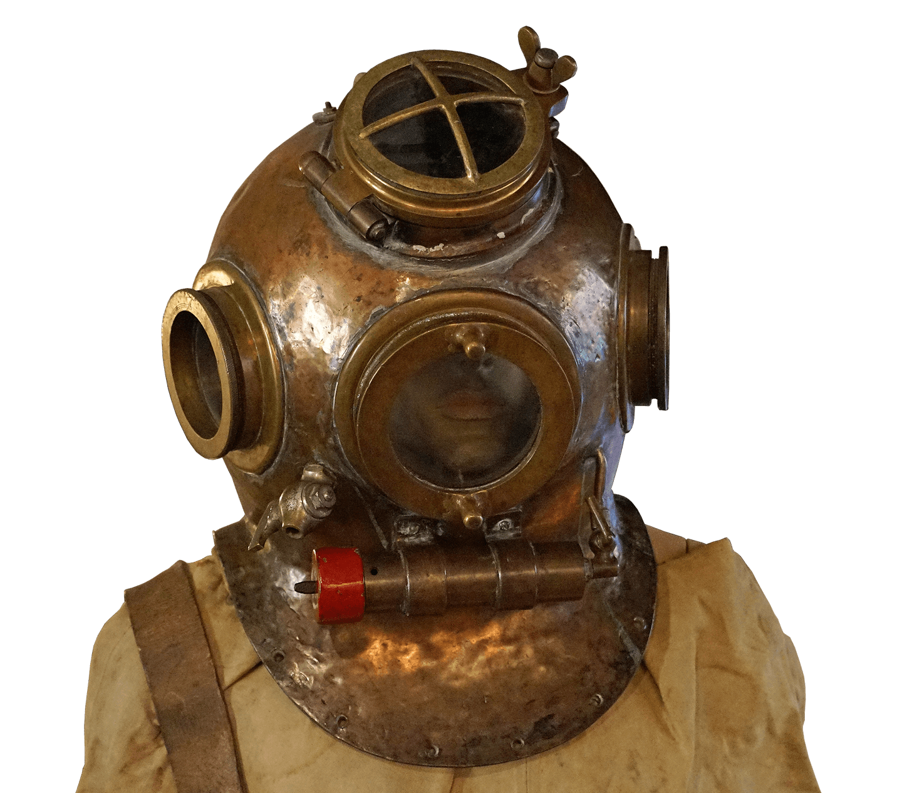
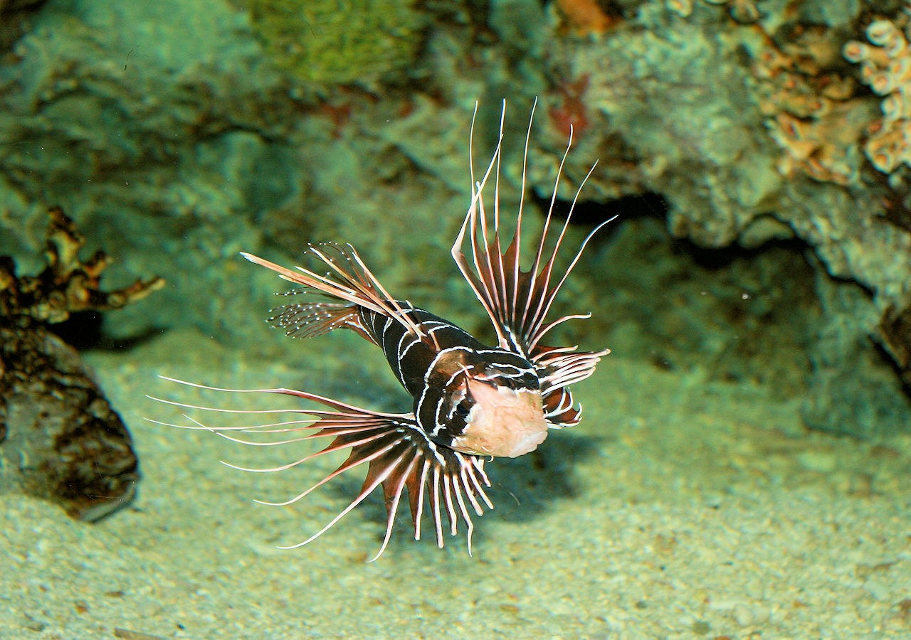

Diving is a great way to stay physically fit. It is a full-body workout that improves cardiovascular health, strength, and flexibility.

Diving provides a sense of peace and tranquility underwater, reducing stress and promoting mental well-being. It also helps improve focus and mindfulness.
Diving allows you to connect with the underwater world and experience the beauty of marine life. It fosters a deeper appreciation for nature and promotes environmental awareness.

Diving offers thrilling adventures and opportunities for exploration. Discovering underwater caves, shipwrecks, and unique marine ecosystems will satisfy your sense of adventure.
Diving opens up a hidden world beneath the surface, where you can encounter incredible marine creatures and witness stunning underwater landscapes.